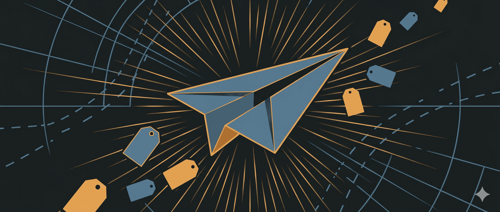

Mùa hè sắp đến, tôi tranh thủ chia sẻ loạt bài: “Bí kíp đi du lịch gia đình Ngon Bổ Rẻ” cho các anh em kịp lên kế hoạch đi chơi đây.
Bài 1: 15 TIPS mua vé máy bay giá RẺ
Gia đình tôi đã đi du lịch nhiều nơi ở Việt Nam (từ Nam ra Bắc), và nhiều nước trên thế giới (Pháp, Ý, Thuỵ Sỹ, Mỹ, Úc, Sing, Hy Lạp, Hàn Quốc, Đài Loan, Nhật Bản…). Có một ít bí kíp du lịch xin được chia sẻ với các bạn về cách mua vé máy bay, thuê xe, phượt, làm visa, thuê khách sạn…đóng gói thành 1 loạt bài.
Bài đầu tiên sẽ về chủ đề mua vé máy bay. Mời các bạn thẩm:
Công cụ so sánh và tìm vé rẻ nhất
Tip 1: check vé nhanh bằng App. Tôi hay dùng Momondo hoặc Kayak, hai app này giúp chúng ta vé rẻ nhất bằng cách “Mix and Match” - phối hợp vé tại nhiều hãng bay, và sắp xếp theo tiêu chí Giá rẻ nhất, Thời gian bay ít nhất, Thời gian khởi hành sớm nhất…
Tip 2: (siêu Tip) Một tính năng rất hay của Momondo mà ít người biết là “Explore” - nôm na là tìm vé rẻ nhất theo thời điểm khi chưa xác định cần đi đâu. Nó sẽ hiện nguyên cái bản đồ thế giới với giá rẻ nhất trong vòng 1 năm, lúc đó mình sẽ dễ lên kế hoạch hơn. Tôi rất thích tính năng này, nhiều quyết định đi đâu du lịch được đưa ra nhờ vào nó
Tip 3: sau khi chọn được hãng bay trên Momondo, thì vào trực tiếp trang web của hãng đó để check vé. Thỉnh thoảng một số Agency họ có vé rẻ hơn vé hãng hàng không, nhưng không nhiều. Sau khi cộng phí thuế các kiểu thì cũng không chênh lệch là mấy. Chưa kể các website họ làm nhìn không tin cậy lắm. Vì vậy tôi khuyến khích là mua trực tiếp tại hãng, sau này có vấn đề gì dễ xử lý.
Tip 4: các hãng máy bay hầu hết đều có tính năng “Tìm vé rẻ nhất theo ngày”, nghĩa là thay vì chọn ngày cố định, thì hãng sẽ cho ta thấy giá rẻ nhất của những ngày khác. Đây là cách hết sức cơ bản nhưng hữu ích về mặt giá trị, anh chị nào trước đây chỉ biết chọn thủ công từng ngày nhớ dùng thử tính năng này.
Lưu ý khi đặt và thanh toán vé
Tip 5: một số hãng bay để giá cuối cùng sau phí thuế (Vietnam Airlines), nhưng cũng có hãng lại để giá trước phí thuế (Vietjet Air), nên so sánh giá nhớ so sánh giá cuối cùng.
Tip 6: lúc mua vé, nhiều hãng cố tình xây dựng cách hiện thị sản phẩm Add-on (suất ăn, chọn ghế, bảo hiểm, hành lý kí gởi…) theo cách có lợi cho hãng bay bằng cách giấu bớt hiện thị trên màn hình điện thoại. Tôi khuyên các anh chị nên dùng website trên máy tính khi mua vé thật sự, để quan sát tốt hơn, và đọc đầy đủ thông tin, đặc biệt khi mua vé có giá trị cao.
Tip 7: nên mua hàng lý kí gởi sát ngày bay, không nên mua sớm, đề phòng huỷ vé, hoặc thay đổi hành trình.
Theo dõi giá và linh hoạt hành trình
Tip 8: (siêu Tip). Cài chức năng Theo dõi giá chặng bay (Tracked Flight). Cách làm rất đơn giản, vào trang như dưới còm, chọn hành trình mình cần theo dõi. Định kỳ Google sẽ gởi thông tin Giá mới của hành trình để ta dễ quyết định hơn. Tôi đã từng mua vé đi Úc giá 5 triệu khứ hồi, bạn tôi đi Pháp 400$ khứ hồi năm 2025 vì vô tình tìm được hãng hàng không mở đường bay mới nên giá siêu rẻ.
Tip 9: Nhân tiện nói về giá của hành trình trên Tip 8, các bạn lưu ý linh hoạt hành trình sẽ có nhiều cái lợi. Ví dụ: chặng SGN - MEL (Melbourne) và SGN - SYD (Sydney) chênh lệch khá lớn. Thay vì mua khứ hồi SGN - MEL - SGN giá 10 triệu (mỗi chiều 5 triệu), tôi mua thành 2 chặng SGN - MEL và SYD - SGN giá chỉ có 8 triệu (chặng SGN - MEL giá 5 triệu, nhưng SYD - SGN chỉ có 3 triệu)
Tip 10: nhiều hành trình có thời gian stopover/overlay/quá cảnh dài đáng kể, có thể kết hợp tham quan hoặc nghỉ ngơi. Ví dụ các hãng bay (Emirates/Qatar/Etihad) quá cảnh Trung đông áp dụng cho ở khách sạn 4-5 sao có ăn sáng 1-2 đêm, xe đưa đón hoặc hãng bay ở Trung Quốc cho visa quá cảnh vào chơi thành phố thời gian ngắn (chính sách 24/72/144). Tôi có thằng em trai hay bay Châu Âu - Việt Nam, gia đình nó chưa bao giờ bỏ tiền đi chơi Trung Đông nhưng quá cảnh dài mấy lần cũng thưởng thức được kha khá thứ hay ở xứ này.
Tip 11: (siêu Tip) mỗi hạng vé có chính sách giá khác nhau, nhưng nói chung là nếu hãng hàng không thay đổi giờ bay (thường là trên 4h) thì ta có thể hoàn vé. Tôi từng mua vé Sài gòn đi Malaysia, nhưng phải huỷ kế hoạch đi chơi để gặp khách hàng. Tưởng là mất trắng vé, ai dè gần đến giờ bay thì nhận SMS thay đổi giờ bay. Tôi gọi cho tổng đài và yêu cầu hoàn vé thành công.
Tip 12: Giá vé 2 chiều mua riêng hay mua chung là đa phần là không khác nhau (trên các hãng giá rẻ là không khác), trừ một số ít hãng truyền thống có giảm tầm 3-5%
Tip 13: Địa điểm chọn vé khác nhau có thể ra giá khác nhau. Ví dụ tôi chọn địa điểm là tôi đang ở Úc, thì giá vé có thể Rẻ hơn nếu chọn là ở Việt Nam (hoặc cũng có thể là mắc hơn). Lí do là chênh lệch tỉ giá, hoặc giá khác nhau theo địa lý là một phần trong chính sách giá của họ.
Tip 14: chắc bạn cũng đã biết: vé máy bay cũng có chu kỳ: các dịp lễ Tết hoặc hè sẽ giá cao chẳng hạn. Nhưng các chặng nước ngoài có thể chu kì ngược lại. Để ý tính chu kỳ các bạn sẽ có lựa chọn ngày thông minh. Ví dụ: thay vì đợi vào hè mới đi, tôi mua vé cuối tháng 5, vừa sát dịp bế giảng, dịp này nhu cầu chưa cao nên vé vẫn còn tốt.
Chọn tỉ giá thanh toán có lợi
Tip 15: chọn tỉ giá thanh toán cho hợp lý khi mua tại các hãng bay nước ngoài. Cụ thể là tỉ giá hãng lấy có thể chưa tối ưu khi quy đổi ra VND nên thay đổi tỉ giá thanh toán xem loại nào có lợi thì hãng mua. Nhiều khi chọn đúng tỉ giá tiết kiệm được 5-10% luôn ấy.
🔍 Phân tích bài viết
📌 Tóm tắt ý chính
Bài viết tổng hợp 15 mẹo thực chiến để mua vé máy bay giá rẻ, chia làm 3 nhóm cốt lõi: (1) dùng công cụ đúng — Momondo/Kayak để so sánh, Google Tracked Flight để theo dõi giá; (2) linh hoạt hành trình — không cố định ngày/điểm đến, mua 2 chiều riêng thay vì khứ hồi, khai thác stopover; (3) tối ưu khi thanh toán — chọn đúng tỉ giá, dùng máy tính thay điện thoại, so giá sau thuế. Siêu tip là kết hợp cả 3 nhóm này đồng thời.
🗺️ Mindmap
💡 Insight & Góc nhìn đa chiều
- Thông tin bất cân xứng là vũ khí của hãng bay. Giá khác nhau theo địa điểm đặt vé, loại thiết bị, tỉ giá thanh toán — đây không phải lỗi hệ thống mà là chiến lược phân biệt giá có chủ ý (price discrimination). Hãng bay khai thác sự lười biếng của người mua.
- Momondo Explore thực chất là một công cụ demand generation cho các điểm đến ít được biết đến. Người dùng nghĩ mình đang “tìm vé rẻ” nhưng thực ra đang bị dẫn dắt sang các điểm đến có supply dư thừa mà hãng muốn đẩy.
- Chính sách “hãng đổi giờ bay > 4h được hoàn vé” ít người biết nhưng cực kỳ có lợi. Đây là quyền hợp pháp của hành khách, nhưng hãng không chủ động thông báo — cần người dùng tự claim.
- Xu hướng “linh hoạt hành trình” đang trở thành kỹ năng cạnh tranh. Người biết mua vé theo kiểu open-jaw (vào/ra 2 điểm khác nhau) hay mixed-cabin luôn có lợi thế hơn người chỉ biết đặt khứ hồi thông thường.
⚖️ Phản biện
- Tip 2 (Momondo Explore) không phải lúc nào cũng tiết kiệm thực sự. Vé rẻ thường đi kèm giờ bay xấu, nhiều chặng nối, hành lý không bao gồm — chi phí thực tế sau khi cộng hotel thêm đêm, ăn uống tại sân bay, taxi đêm có thể cao hơn vé thẳng.
- Tip 8 (vé Úc 5 triệu, Pháp 400$) là ngoại lệ hiếm, không phải quy tắc. Đây là “flash deal” khi hãng mở đường bay mới hoặc có lỗi giá — không thể trông chờ làm chiến lược. Bài viết có phần hype quá mức với ví dụ không điển hình.
- Tip 6 (dùng máy tính thay điện thoại) không còn đúng với mọi hãng. Nhiều hãng hiện tại đã đồng bộ giao diện desktop/mobile; vấn đề là kỹ năng đọc UI chứ không phải thiết bị.
- Thiếu đề cập đến loyalty programs / miles. Với người thường xuyên bay, tích điểm hạng thành viên có thể tiết kiệm nhiều hơn tất cả 15 tip này cộng lại.
❓ Câu hỏi mở
- Khi AI ngày càng giỏi tối ưu giá vé tự động (ví dụ Google Flights AI, các bot Telegram theo dõi deal), liệu các mẹo “thủ công” như thế này còn relevant trong 3–5 năm nữa không?
- Các hãng bay có phản ứng lại bằng cách “chống lại” người dùng dùng VPN hoặc đổi địa điểm để lấy giá rẻ không — và điều đó có hợp pháp với điều khoản dịch vụ không?
- Với người thu nhập trung bình ở Việt Nam, việc “linh hoạt hành trình” thực tế bị giới hạn bởi ngày phép cứng nhắc — chiến lược nào tối ưu nhất cho người chỉ có 5–7 ngày phép/năm?
🇻🇳 Liên hệ Việt Nam
- Thị trường hàng không nội địa VN đang trong giai đoạn cạnh tranh cao giữa Vietnam Airlines, Vietjet, Bamboo, Vietravel — người tiêu dùng Việt đang có thêm lựa chọn nhưng cũng dễ bị nhầm lẫn bởi cách hiển thị giá khác nhau (Tip 5 đề cập rất đúng thực tế VN: Vietjet để giá trước thuế).
- Xu hướng du lịch gia đình dịp hè đang tăng mạnh sau COVID — nhu cầu tối ưu chi phí vé máy bay cho 3–5 người trong gia đình là nhu cầu có thực, lớn.
- Lao động VN ở Nhật, Hàn, Đài Loan — nhóm này thường mua vé về quê dịp Tết là thời điểm giá cao nhất, và ít ai biết đến các tip như chọn địa điểm khác, đổi tỉ giá hay mua vé riêng lẻ. Tiềm năng tiết kiệm lớn.
- Hạ tầng thanh toán quốc tế của người Việt vẫn hạn chế (nhiều người chưa có thẻ quốc tế hoặc tài khoản ngoại tệ) — Tip 15 về tối ưu tỉ giá đòi hỏi có thẻ tín dụng ngoại tệ, không phải ai cũng tiếp cận được.
📖 Giải thích thuật ngữ
Thuật ngữ Giải thích dễ hiểu Mix and Match Momondo/Kayak ghép vé của nhiều hãng bay khác nhau cho 1 hành trình — ví dụ chặng đi dùng Vietnam Airlines, chặng về dùng Vietjet để ra giá rẻ nhất Open-jaw Vé “hở” — bay vào điểm A, bay về từ điểm B; như đi SGN → MEL nhưng về từ SYD → SGN. Thích hợp khi muốn tham quan 2 thành phố mà không phải quay lại điểm xuất phát Stopover / Quá cảnh Điểm dừng giữa đường khi bay — ví dụ SGN → Dubai → Paris, Dubai là stopover. Nếu thời gian dài (8–12h+) có thể ra ngoài tham quan Tracked Flight Tính năng Google Flights tự động theo dõi và báo khi giá vé 1 hành trình thay đổi — như “alarm giá vé” Price discrimination Hãng bán cùng 1 chỗ ngồi với giá khác nhau cho những người khác nhau tùy theo đặc điểm của họ (ở đâu, đặt khi nào, thiết bị gì)